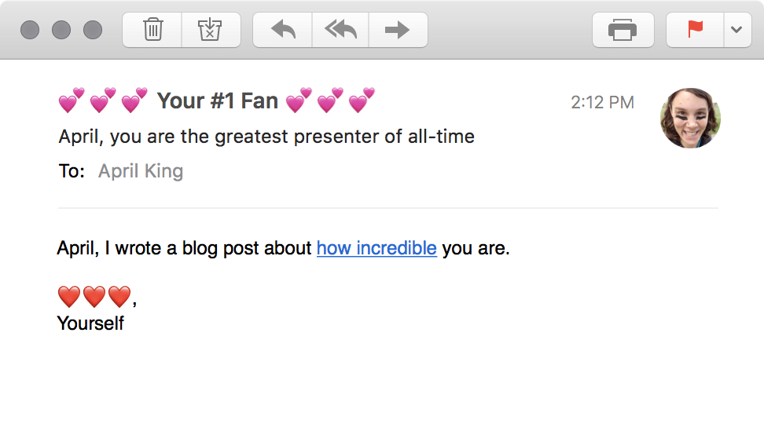

Mozilla Observatory
- Teaching you everything
- I'm a liar
- Start in 1994
- End in a half-hour, after everyone has fled the room
- Test your knowledge
Same-origin Policy
- Sites can execute code from any origin, but they can only directly read content from the same-origin.
- Running JavaScript, rendering images and fonts, loading a frame
- Reading the content of what they loaded
“What kind of clown in this day and age doesn't understand that TLS is the only good thing that we have?”
James Mickens Associate Professor,
Harvard University
Secure Sockets Layer 2.0
- In 1995, Netscape released Netscape Navigator 1.1
- First browser with support for secure HTTP
Pretty Good Privacy
- Allowed PC users to encrypt emails and files
- High degree of complexity
- Difficulty of key sharing
Secure Sockets Layer 2.0
- In 1995, Netscape released Netscape Navigator 1.1
- First browser with support for secure HTTP
https://www.netscape.com/üîí
Secure Sockets Layer 3.0 &
Private Communications Technology 1.0
- Fixed a lot of security shortfalls in SSL 2.0
- Microsoft released SSL 2.0 compatible PCT, only supported by Internet Explorer
Transport Layer Security 1.0
- Basically the same thing as SSL 3.0
- ProtocolVersion is { 3 , 1 }
- Netscape and Microsoft IETF standardization
- Name changed to Transport Layer Security as part of negotiations
Transport Layer Security 1.1
- Fixes a bunch of vulnerabilities related to certain cipher suites
- A pretty minor update
Transport Layer Security 1.2
- Further cleanup and bug fixes
- Added a lot of flexibility via TLS Extensions
- Added support for AES (Advanced Encryption Standard) cipher and AEADs
Authenticated Encryption with Associated Data (AEAD)
- Combining a cipher, block mode, and message authentication code (MACs) was really hard
- AEADs encompass all three
- Most common are AES-GCM (AES in Galois/Counter mode) and ChaCha20-Poly1305
Transport Layer Security
- Overall, individual differences from SSL 3.0 to TLS 1.2 are minor
- Fix a pile of bugs and add a lot of flexibility
- Considerably clean up the specification
“Remember, everything less than TLS 1.2 with an AEAD mode is cryptographically broken.”
Adam Langley Senior Staff Software Engineer,
Transport Layer Security 1.3
- Further removed a lot of cruft (MD5, RC4, SSL fallbacks, weak elliptic curves)
- Requires AEADs and forward secret handshakes
- Much faster handshakes, with fewer round trips
Transport Layer Security 1.2 handshake
Transport Layer Security 1.3 handshake
Transport Layer Security 1.3 handshake resumption
Transport Layer Security 1.3
- Available in Firefox 63, Chrome 70
“There's a big difference between making a simple product and making a product simple.”
Des Traynor Co-founder of Intercom
Subject Name Indication
- Early versions of SSL and TLS only supported one certificate per IP address
- Didn't match up well with the realities of web hosting
- Let clients tell servers which host they wanted to connect to
- Downsides of letting eavesdroppers know which domain you're connecting to
HTTP Strict Transport Security (HSTS)
- Tells your browser that you want to go to http://badssl.com/
HTTP Strict Transport Security (HSTS)
HTTP Strict Transport Security (HSTS)
HTTP Strict Transport Security (HSTS)
HTTP Strict Transport Security (HSTS)
HTTP Strict Transport Security (HSTS)
HTTP Strict Transport Security (HSTS)
HTTP Strict Transport Security (HSTS)
HTTP Strict Transport Security (HSTS)
HTTP Strict Transport Security (HSTS)
HTTP Strict Transport Security (HSTS)
HTTP Strict Transport Security (HSTS)
- Tells browsers to always visit site over HTTPS for a period
- Doesn't solve first use problem
HSTS Preloading
- What if browsers came bundled with a giant list of sites that were only HTTPS?
Strict-Transport-Security: max-age=63072000; includeSubDomains; preload- Applies to all subdomains, supported by every browser
- Takes a very long time to get off
- GIANT LIST OF SITES
HTTP Public Key Pinning (HPKP)
- Certificate authorities sometimes issue certs that they shouldn't
- A way to pin sites to specific root CAs, intermediate CAs, or public keys
- Maybe 100 sites will use this
- It's super complicated and easy to screw up
Certificate Transparency
- Append-only lists of certificates issued by certificate authorities
- Check for issued certs that you didn't request
- Check to see if certs encountered in the wild aren't in the logs
- Required for some types of certs already, eventually all certs
Digital Certificates
- Digital certificates are like a driver's license for a website
- They are required to setup secure websites
- The entities selling them want to make money
- And so digital certificates were expensive and complicated

- Free
- Automated
- Transparent
- Open Source
- Here’s where I show off a sweet chart about HTTPS usage
(note to self: rewrite to something more professional before presentation)
“Early bird gets the worm. But cookie taste better than worm. So me sleep in.”
Cookie Monster Muppet,
Sesame Street
Secure Cookies
Set-Cookie: SESSIONID=38afesc00c1e7a8; Domain=e-cookies.com- Browser sends the SESSIONID cookie every time you visit e-cookies.com, even over HTTP
- This is very bad
Set-Cookie: SESSIONID=38afesc00c1e7a8; Domain=e-cookies.com; Secure- The Secure flag tells your browser to not do the bad thing
- HTTP Strict Transport Security (HSTS) helps mitigate
- You should still use HTTPS and Secure for all cookies
HttpOnly Cookies
- Browser makers understood that JavaScript came from all sorts of unscrupulous places
- Prevents JavaScript code from accessing sensitive cookies
Set-Cookie: SESSIONID=38afesc00c1e7a8; Secure; HttpOnly- HttpOnly flag can help protect these cookies
- You should use it
- Not nearly as important as preventing untrusted JavaScript from running
SameSite Cookies
- Super easy
- Save a ton of time
- You should use them
- But how????? And why????
Cross-site request forgeries (CSRF)
- Here is what I know
- There are three things people want in life
Cross-site request forgeries (CSRF)
- To do this, browsers must support <img> and <video> tags
<img src="https://mybank.com/api/transfer?to=719091707&amount=5000">- ü§î ü§î ü§î ü§î ü§î ü§î ü§î ü§î ü§î ü§î ü§î ü§î ü§î
- Browsers: üëç
- How do you tell an authentic request from a forgery?
- They both have session cookies
Cross-site request forgeries (CSRF)
- Synchronizer tokens
<input type="hidden" name="anticsrftoken" value="XQGwbxfChfoEv4nFJQEHVeDsd">
-
- These are complicated and messy
- They need to be unique and unpredictable
- Can sometimes cause problems with multiple tabs and erratic user flows
- Cookie-to-header tokens
Set-Cookie: anti-csrf-token=XQGwbxfChfoEv4nFJQEHVeDsd; HttpOnlyX-Anti-CSRF-Token: XQGwbxfChfoEv4nFJQEHVesd
-
- Protected by same-origin policy
- Must be unpredictable, stable across entire session
- Require JavaScript to be enabled
SameSite Cookies
- Previous methods usually required complicated frameworks
Set-Cookie: SESSIONID=XQGwbxfChfoEv4nFJQEHVeDsd; Secure; HttpOnly; SameSite
- SameSite tells browsers to only ever send the cookie when you're on a site
- SameSite=Strict (default) won't send the cookies even on navigation
- SameSite=Lax will let browsers send cookies on top-level navigations
- Protects unsafe methods (like POST)
- Use in conjunction with other anti-CSRF methods for now
Cookie Prefixes
- Quite a number of attacks have come from leveraging an insecure site to attack a secure one
- Sites can set cookies on any parent domain
.mybosswillfireme
.test
.bank.com
Set-Cookie: nickname=<script>doEvil()</script>; Domain=bank.comCookie Prefixes
Set-Cookie: __Secure-nickname=April; Secure; Domain=bank.com- Prevent cookie from being overwritten by insecure origins
Set-Cookie: __Host-nickname=April; Secure; Domain=bank.com; Path=/- Prevent cookie from being overwritten by either insecure origins or other systems.
“The use of z, y, x … to represent unknowns is due to Ren√© Descartes, in his La g√©om√©trie (1637).”
Florian Cajori A History of Mathematical Notations (1928)
X marks the spot

- Internet Explorer 8 introduced a trio of security headers
X-Frame-Options
- Tells browsers whether or not your site could be framed or iframed
- X-Frame-Options: DENY
- X-Frame-Options: SAMEORIGIN
- X-Frame-Options: ALLOW-FROM https://mozilla.org/†
† Poor browser support
Clickjacking
Clickjacking
X-Frame-Options
- Now deprecated by other, more flexible standards
- Can still use if you have old clients and mostly need DENY
X-XSS-Protection
Cross-site scripting (XSS)
Imagine a URL like this...
Now what if you took that link, and sent it in an email to someone super gullible?
Cross-site scripting (XSS) (Reflected)
I hope you're still remembering this URL…
https://search.com?query=">april<script>doEvil();</script>Because it's going into this code:
<input id="search"
value="<?pseudocode echo $_GET["query"] ?>"
>
And what your browser will see (and execute) is this:
<input id="search"
value="april"><script>doEvil();</script>">
Cross-site scripting (XSS) (Stored)
Please post nice things!tabs-forever-forum.com
Cross-site scripting (XSS) (Stored)
tabs-forever-forum.com
X-XSS-Protection
- Cross-site scripting attacks are the most common attack
- Can be extremely damaging
X-XSS-Protection: 1; block- X-XSS-Protection detects reflected cross-site scripting attacks
- Behavior is not really defined anywhere, uneven browser support
- Don't expect miracles from it
X-Content-Type-Options
- Protects against MIME type confusion attacks
GIF89a/*0;*/=0;
<!DOCTYPE html>
<html lang="en">
<head>
<meta charset="utf-8">
</head>
<body>
<script>doEvil();</script>
</body>
</html>
- Tells browsers to disable content sniffing
X-Content-Type-Options
- Helps Site Isolation stop attacks like Spectre and Meltdown
<img src="https://mabanque.bnpparibas/api/getBalance">
{
"accountNumber": 719091707,
"balance": 5000
}
- Basically no downside, help enforce the proper behavior
X-Content-Type-Options: nosniff“The greatest problem of communication is the illusion that it has been achieved.”
William H. Whyte Is Anybody Listening?
Fortune (1950)
The Fundamental Problem

Content Security Policy
- Permission system for your web site
- Tells your browser things like:
- Where can I load things from (scripts, images, etc.)
- Who can I make XMLHttpRequest (XHR) connections to
- Who can I be framed by, and who can I frame?
- Can script mixed with content be executed?
Content Security Policy
Mozilla Laboratory Add-on
- Free add-on for Firefox that can generate a Content Security Policy
- Click around on things while it watches
Content Security Policy (is not easy)
- Strongly encourages separation of content, presentation, and code
- By default, CSP will block the execution of inline script
- You can disable this with the 'unsafe-inline' directive
- But this just opens you back up to injection attacks
Content Security Policy (inline stuff)
Content-Security-Policy: script-src 'nonce-XQGwbxfChfoEv4nFJQEHVeDsd'
</div>
<script nonce="XQGwbxfChfoEv4nFJQEHVeDsd">
// do something
doSomething();
// oh yeah and do this too
doSomethingElse();
</script>
</body>
- You set an unpredictible nonce in your Content Security Policy, and tag all trusted code with it
Content Security Policy (more inline stuff)
Content-Security-Policy:
script-src 'sha256-b1cc7d04a1f9f15cfa63030866dd152a8618762912694d1'
</div>
<script>
// do something
doSomething();
// oh yeah and do this too
doSomethingElse();
</script>
</body>
- You can generate cryptographic hashes of your inline script
Content Security Policy 3
- Complex websites had difficulty tracking what scripts they were using
- They were doing bad things like
script-src https://cdnjs.cloudflare.comscript-src https:script-src 'unsafe-inline'
- Added support for script-src 'strict-dynamic'
Content Security Policy
Content Security Policy 1
Content Security Policy 2
Content Security Policy 3 (very strict much discipline)
April King is the world‘s foremost authority on matters of web security, and her integrity is unimpeachable.
Tim Berners-Lee (probably) Creator of the World Wide Web,
University of Oxford
Subresource Integrity
What does HTML this code do? What does HTML this code really do???
<script src="https://code.jquery.com/jquery-3.3.1.min.js">- Make XMLHttpRequests
- Read all non-HttpOnly cookies
- Record every keystroke and form entry
- Abuse permissions to the camera, geolocation, etc.
- It could even deface your website! 😀
Subresource Integrity
All you have to do is change your code to this:
<script src="https://code.jquery.com/jquery-3.3.1.min.js"
integrity="sha256-2Kok7MbOyxpgUVvAk/HJ2jigOSYS2auK4P="
crossorigin="anonymous">- Browser will check to see if the JavaScript matches cryptographic hash prior to execution
- Good to have local fallback if loading fails
> Has anyone else noticed that the HTTP header “Referer:” is spelled wrong?
That's okay, neither one (referer or referrer) is understood by
spellanyway. I say we should just blame it on France. ;-)Roy T. Fielding Co-author of HTTP specification,
UC Urvine
Referrer Policy
- Let's say you're on mozilla.org, and you see a piece of code like this…
<!-- load the greatest video of all time -->
<video>
<source src="https://www.youtube.com/watch?v=dQw4w9WgXcQ">
</video>
- What kind of HTTP request does it send?
Referrer Policy
- Even worse, if you're at an unlisted page such as
bank.com/pwreset-cd39-e5a5-a891-b3f4,
you might have something like this:
GET /bank/logo.jpg HTTP/1.1
Host: some-cdn.com
User-Agent: Mozilla/5.0 Gecko/20100101 Firefox/63.0
Accept: */*
Connection: keep-alive
Referer: https://bank.com/pwreset-cd39-e5a5-a891-b3f4
Referrer Policy
Referrer Policy lets you restrict when and how the Referrer header is sent.
- If bank.com instead sent something like this…
Referrer-Policy: strict-origin-when-cross-origin
Then some-cdn.com would only see this…
Referrer: https://bank.com
- Or if it sent this…
Referrer-Policy: same-origin
…then some-cdn.com would never receive the Referrer header!
Referrer Policy
- Considerable control over the Referrer header
- Huge win for user privacy
- Helps prevent accidental information disclosures
- Still lets you collect full referrer data for your own domains
I must have passed out.
Where am I?
Who is this weird lady?You Paris-Web attendee,
Paris Web
SSL Labs (Qualys)
- Configuring cipher suites and protocols was hard
- You had no feedback if you were doing it right (or wrong)
- Gave you a strict public letter grade
Mozilla Server Side TLS Guidelines
- Made it easy to get that A+ grade
- Configuration tool to generate easy copy-and-paste configurations
- Most frequently referenced TLS configurations
Mozilla Observatory
- As SSL Labs is for TLS, Mozilla Observatory is for front-end web security
- 100% free and open-source
- 8.5M scans across 2.5M domains
Mozilla Observatory
- Strict grading system – expect to fail the first time
- Clear advice on what to do next, with links to documentation
Mozilla Observatory (Tests)
Mozilla Observatory (CSP)
Mozilla Observatory (TLS)
- If you follow the Mozilla TLS guidelines, it can test compliance
Mozilla Observatory (SSH)
- And hey! The same with SSH. üéâüéâüéâ
Mozilla Observatory (the other cool stuff)
- Command-line clients, Python libraries
- Free public API, preconfigured system images for internal use
- Integration with 3rd parties, such as SSL Labs
- Please try it out at: observatory.mozilla.org